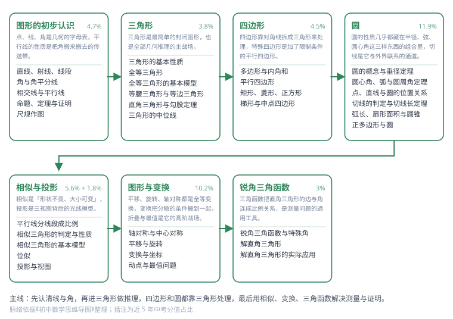

第 2 领域 · 几何
几何
从直观确认到演绎推理：线与角 → 三角形 → 四边形 → 圆 → 相似与变换。（中考约 45.5% 分值）
知识脉络

这张图是这一领域的知识骨架：从左到右是学习顺序，每个方框是一个主题，方框下面的小字是主题内的知识点。照着它走，不会出现「做这道题要用到还没学的工具」的情况。
| 课标主题 | 图形与几何 |
|---|---|
| 主题数 | 7 个 |
| 知识点 | 33 个（已写 33 篇） |
图形的初步认识5/5
点、线、角是几何的字母表，平行线的性质是把角搬来搬去的传送带。（约 4.7%）
三角形6/6
三角形是最简单的封闭图形，也是全部几何推理的主战场。（约 3.8%）
四边形4/4
四边形靠对角线拆成三角形来处理，特殊四边形是加了限制条件的平行四边形。（约 4.5%）
圆6/6
圆的性质几乎都藏在半径、弦、圆心角这三样东西的组合里，切线是它与外界联系的通道。（约 11.9%）
相似与投影5/5
相似是「形状不变、大小可变」，投影是三视图背后的光线模型。（约 5.6% + 1.8%）
图形与变换4/4
平移、旋转、轴对称都是全等变换，变换把分散的条件搬到一起，折叠与最值是它的高阶战场。（约 10.2%）
锐角三角函数3/3
三角函数把直角三角形的边与角连成比例关系，是测量问题的通用工具。（约 3%）